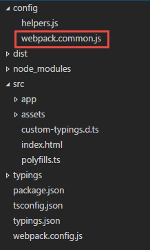
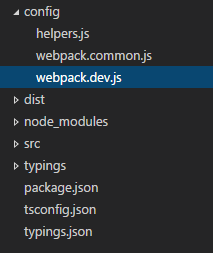

前言
前篇我們已經可以透過 webpack + Angular2 跑出 Hot Reload ，但其實我們還有許多事情要繼續整合處理，
例如我們希望可以透過 npm start 進行打包 ( webpack-dev-server 是不會產出實體檔案的.. )
或是能分開 webpack.config 的設定等等，所以，這篇我們會繼續針對這些繼續設定下去。
注意事項
- 此文章的版本為 angular2 beta 15 ，未來應該也不會跟著版本更新…請看的朋友注意
- 裡面 Webpack 版本為 1.x , 2.x 可能會有幅度變動，請直接參考 angular2-webpack-stater
- 此文章壟長，且未必能 100% 成功 ( 因 Package 相依性、Webpack 版本、angular2 版本 可能會造成差異 )
- 有興趣的朋友，可以直接參考 angular2-webpack-stater Source Code
- 文章內容的所有 Soucre 來源為 angular2-webpack-stater ，小弟只是針對內容進行解析紀錄
- 文章開頭會以 Quickstart 為起始
- 官方 Source Code 裡面有很多的註解，但本篇文章，因為篇幅關係，小弟會把註解拿掉
分離 webpack.config.js
在原始的 source code 裡面，大神是將 webpack.config.js 進行分離，分別有
- webpack.common.js - 負責共用的設定
- webpack.dev.js - 負責開發用的設定
- webpack.prod.js - 負責正式環境的設定
- webpack.test.js - 負責測試環境的設定
而我們這邊，會先來看看，如何拆出 webpack.common.js 和 webpack.dev.js。
安裝 webpack-merge
基本上，webpack 沒有提供這種合併多個 config 的功能，所以我們要透過 webpack-merge package 來達到此需求。
同樣的，我們直接看 package.json ，這樣大家才可以得知，目前這篇文章的所有 package 版本與目前安裝狀況。
這邊我們多增加了 “webpack-merge”: “^0.8.4” 。
完整 package.json
1 | { |
完成後，執行 npm install 安裝。
分離 webpack.config.js
接下來，其實沒甚麼技巧可言，大家可以依據自己的需求，將常共用的 webpack.config 移到 webpack.common.js 裡面，
但我們這邊依照大神的 source 來做這件事情。
首先我們先把 webpack.config.js 拷貝一份到 config 目錄底下，並且改名為 webpack.common.js 如下圖:

因為是 common ，所以我們移除
1 | const DefinePlugin = require('webpack/lib/DefinePlugin'); |
既然 DefinePlugin require 移除了，那 plugins 底下的 DefinePlugin 自然也移除了
1 | new DefinePlugin({ |
接下來，也把 tslint 和 devServer 移除
1 | tslint: { |
P.S 如果大家有去看 Source ，會發現有一個 Metadata 如下兩個 source code ，
神人作者對於 Metadata 其實有兩個用途，一個是拿來輸出到網頁上，例如 title .
另外一個是拿來使用設定環境變數；基本上輸出 title 的部分，我就會直接拿掉了。
1 | /* |
1 | /* |
完整的 webpack.common.js
1 | /** |
那接下來，我們就要調整原始的 webpack.config.js
調整 webpack.config.js
我們改成如下，首先，我們會引用 webpack-merga；另外，我們這邊開始啟用 ENV , HRM , METADATA 環境的變數。
P.S 在原本的 Source Code 裡面，有使用到 webpackMerge(commonConfig.metadata, 整合 commonConfig 的 metadata，
但是在原本的 Source Code 裡面，MetaData 的定義 ，主要是用來顯示於 index 上。
基本上這是不需要的，所以 webpack.config.js 的這邊這段，我就移除了 webpackMerge 。
1 | const METADATA = { |
另外，要特別注意 require 的路徑，因為路徑換了，所以要加上 config
P.S 或許大家有注意到，node，debug, devtool, output 都有重複..
為什麼需要重複，其實小弟我沒有在去做額外的嘗試，但 source 是有保留的。
完整的 webpack.config.js
1 | /** |
最後，我們還希望做一件事情，調整一下，npm 的 scripts，讓我們能更輕鬆地執行測試環境。
調整 package.json
我們重新調整了 npm scripts 裡面的項目，我們把 tsc、tsc:w、lite 拿掉，
因為這幾個都整合到 webpack，或是不使用了…
而增加了 server 的區段，未來我們就可以使用
- npm run server:dev 來啟動開發環境 ( 不包含 hot reload )
- npm run server:dev:hmr 來啟動開發環境 ( 包含 hot reload )
- npm run server:prod 來啟動正式環境
( npm run server:prod 現階段會無法使用，這篇文章的最後，會裝上 http-server 就可以正常運作了 )
1 | { |
完成後就可以 npm run server:dev:hmr 試試看。
增加 webpack.dev.js
到這邊，已經越來越方便了，但我們正式環境，可能會有一組設定檔，或是其他環境有其他的設定檔，
所以我們希望把 webpack.config.js 也放到 config 目錄底下。
所以我們就將 webpack.config.js 移到 config 目錄底下，並且改名為 webpack.dev.js

因為目錄改變了，所以要調整一下 require 的路徑，把 config 拿掉。
完整 webpack.dev.js 如下
1 | /** |
調整 package.json
我們就在 server:dev –config 改成 config/webpack.dev.js
1 | { |
完成後，可以在 npm run server:dev:hmr 來測試看看
增加編譯環境
接下來，我們要準備增加 build 的設定，我們希望透過
- npm run build:dev 編譯出 dev 環境的檔案
- npm run build:prod 編譯出 正式環境的檔案
修改 package.json
所以我們先修改 package.json，這邊增加了 build 的相關設定，比較需要注意的是，prebuild:dev 和 prebuild:prod 與裡面。
prebuild:dev 代表著，執行 build:dev 之前，他會先跑 prebuild:dev ，而 prebuild:dev 裡面的 npm run clean:dist
其實就是要清除舊的檔案資訊，而 clean:dist 就是 clean 那個區段的設定，目的就是刪除 dist 目錄的所有檔案。
而他主要是用到了 rimraf 這個 package ，所以底下的 package 也要再加上 “rimraf”: “^2.5.2” 。
並且在 scripts 裡面也加上 rimraf ，不然 npm run rimraf 會錯誤。
另外，等下的 webpack.prod.js 會使遇到以下 plugin ，所以我們也一併裝上
- compression-webpack-plugin
- webpack-md5-hash,原因https://github.com/webpack/webpack/issues/1315
- http-server
1 | { |
完成後，先用 npm install 裝一下 rimraf
P.S 原始文件的 clean 其實還有其他設定，但似乎用不到，所以我就先移除了。
1 | { |
加上 webpack.prod.js 檔案
最後，我們於 config 加上 webpack.prod.js 上。
1 | /** |
加上後，我們就可以 npm run build:prod 來產生正式的檔案 ( 會放在 dist 下 )
然後就可以使用 npm run server:prod 來啟動 Server
參考資料
- https://angular.io/docs/ts/latest/quickstart.html
- https://github.com/angularclass/angular2-webpack-starter
- https://github.com/angular/angular/issues/5755
- https://github.com/typings/typings
- http://www.typescriptlang.org/docs/handbook/tsconfig.json.html
- https://github.com/s-panferov/awesome-typescript-loader
- https://github.com/ampedandwired/html-webpack-plugin